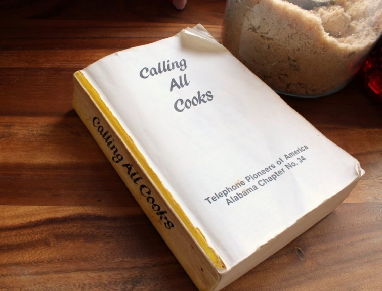

.png)
.PNG)
.PNG)
.PNG)
.PNG)
.PNG)
.JPG)
.JPG)
.PNG)
.PNG)


I hope you had a wonderful turkey day full of food, family, and friends. We certainly had our fill! Now that another Thanksgiving has come and gone, are you ready to jump into the Christmas season? If you were hanging out here last December, you discovered that this lover of red is also a lover of all things Christmas. I have been chomping at the bit to get started on decorating our home for the holidays. Last year, I did a series of posts on our Christmas Traditions. Remember these?
This year, I want to do a few posts about my holiday favorites. With that thought in mind, I want to start by sharing with you my all time favorite drink for get-togethers during cold months. If you are headed out shopping, just leave this beverage in your crock pot or percolator, and it will not only warm you when you return, but it will also make your entire house smell like Christmas. 🙂 The recipe comes from this wonderful cookbook.
When I was in college, I dated a young man who had relatives living in Mobile, Alabama. His mother ordered a number of these cookbooks from the relatives, and she gave me one for Christmas (and volume two the next year.) I have obviously used this one to the point of wearing out the cover! This was the first of Calling All Cooks. It was followed by three others, and there is a Best of Calling All Cooks available, too. All of them are chock full of delicious recipes that are easy and made with ingredients you normally have on hand in your pantry.
The recipe in the cookbook that I love, is for Hot Spiced Percolator Punch. That is the name they have given it. I call it our Hot Christmas Punch because we make it sooooo much in December for holiday parties. You can see that the book practically opens itself to the right page!
 I am not going to make you read it from the book. Here is the recipe for making 10 cups. ( Of course you can multiply it for a large crowd.)
I am not going to make you read it from the book. Here is the recipe for making 10 cups. ( Of course you can multiply it for a large crowd.)
For years I borrowed my mother-in-law’s big percolator. Then we bought our own and used it for many years…so many that it wore out (much like the beloved cookbook. :)) Two years ago, after much research, we bought this one.
West Bend 55 Cup Commercial Stainless Steel Coffeemaker
We use it for this punch and sometimes for hot water for hot cocoa. I have not used it for coffee, so I cannot vouch for how well it makes it, but I do really like it for our other hot drinks. It is noisy, but I think most percolators are. The one thing I would change in the design of it is it needs an on/off button. You plug it in and it starts. I would rather be able to leave it plugged in, and then just push a switch to make it work.
Okay back to the recipe…I do make mine in the percolator (or urn, as some people call it) but it could easily be made in a large stock pot on the stove or in a crock pot. I would change the spices from whole to ground if you are not using a percolator so that you do not have to work around them when serving. The substitute from whole to ground spices would be 1/2 teaspoon for the cinnamon and 1 teaspoon for the cloves…but I like a strong flavor of the spices, so it would be fine to use more. (I was out of whole cloves today, so I substituted ground cloves for them .) I also add more sugar. The cranberry juice makes it quite tart, so I think it needs a little more sweetness.
Oh my goooodness does it smell like Christmas when it is perking! We use the little red cups for serving a crowd, but since I am going to be sipping on this all day as I decorate for the house, I used my Christmas mug. 🙂
It is especially cozy on this frosty morning.
We are off to get a Christmas tree today! I hope your weekend is full of family fun. I will be back with some Christmas decorating and a giveaway for you in my next post!
Merry Christmas!


.PNG)
Thanks for the Christmas Punch recipe! I plan to use it tomorrow night at a neighborhood gathering. I, too, have the 55 cup West End urn. Would you just recommend tripling or quadrupling the ingredients for full usage of the urn? Is there anything you’d cut back on?
great recipe…thanks for sharing…can’t wait to try it
Kelly,
I can’t wait to pass this on to my recipe loving wife. She has a Betty Crocker Cookbook from 1979 that is in 3 pieces. I came here from Hooked on Houses and will be touring your site later tonight. The hot punch sounds like the perfect drink to serve for the Christmas Open House we have planned. Most of the cookies and bars are baked the weekend after Thanksgiving but my wife’s stove decided it wasn’t up to the task and a new stove came wednesday. This weekend is now planned for baking. 🙂
rick
[…] 4. Kelly’s Hot Christmas Punch Recipe […]
I’ll have to give this a try I have a cinnamon apple cider I like to make at Christmas. It, too makes the house smell wonderful! And it’s an old recipe as well. I love old recipes! I have perfect Christmas mugs for it.
I love the idea for punch! I usually do hot apple cider in a crockpot with cups and cinnamon sticks nearby (self-serve) but this might be a nice change. From your experience – do kids like it? It sounds delish. Maybe I’ll make a trial run before Christmas!
Love your blog. I’m plowing through the Mitford books (on your suggestion – I’d never heard of them before) and they are sweet. I’m almost up to the Christmas one in time for the holidays!
I have tried this and it is delicious! Thanks for sharing!
The punch looks great! I think my kids will like it too!
What a combination! Pineapple and cranberry!? Interesting. I’m going to have to try this one — thanks for sharing! *PIN
Josie, why did I NOT buy that percolator from you at the WCU yardsale? (That little lady in my head tried to tell me to buy it.) I keep kicking myself for that! And, now look what Kelly has done! Oh, well, I can use the crockpot!
I had warm cider at William Somoza yesterday and it was great. Going to give your recipe a try. No percolator but will try the crock pot. I will let you know how it works. Happy belated Thanksgiving,
Your drink looks festive and delicious! I might give it a try! Thanks!
I read your post while I was sitting on a bench during our marathon shopping trip at a mall in Gainesville, FL on Friday. I could almost smell your Christmas punch brewing! It made me wish I had some waiting at home for us when we returned! Had to settle on a vanilla latte at Starbucks! Trying to get my fall decorations taken down and wondering why in the world did I put up so many turkeys, pumpkins and leaves!:)
The Hot Christmas Punch sounds delicious! I can’t wait to try it. By the way, I love the sneak peek of your dining room table. I am counting down the time to get a sneak peek of your whole house! I have finally done some holiday decorating of my own – for the first time in 20 years! You are such an inspiration. Thank you.
Thanks for posting. I will be going out to our local Flea Market today for some fun. No decorating yet. I will start on Monday when everyone is gone and I have the house to myself. I’m going to stop at the store on my way home to pick up some pineapple juice. I am salivating from your pictures. Love the hot cider during the holidays, but it will be nice to try something new. Please recommend a few other recipes from this cookbook, that I might be tempted to purchase it. Happy decorating Kelly, something you do so well.
Stopping by to say “hello”. It’s been a while so I’m catching up (I started working recently after 8 years of being a stay at home mom so I’m learning to manage my time differently). Very excited to be into the Christmas season. This Christmas punch sounds wonderful. Oh and congrats on the photo shoot! 🙂
Kelly,
This punch is right up my alley. Mr. B and I love spiced cider around Thanksgiving and then when the lead up to Christmas comes, cranberry based beverages always appeal. I will definitely use this recipe this weekend. We busy setting up Christmas.
I hope you have a wonderful holiday and how lucky to have a dusting of snow.
xo,
Karen
I’m going to have to try that punch…it sounds heavenly! When we took the “big” kids and grandkids to The Lodge at Calloway Gardens for Christmas a couple of years ago, they served the most devine spiced cider in a large silver urn all day…so when I got home I tried to duplicate it. Fortunately, I found a recipe on line that was very much like the spiced cider and I can’t wait for cold weather so I have an excuse to make it. I made my first batch yesterday and ran out of cloves and cinnamon sticks so I need to pick some up at the grocery store tomorrow….I think I posted the recipe on my blog last year but will be posting it again soon.
I can’t wait to see your Christmas decorations! I would normally be putting mine out this weekend but since tomorrow is the Iron Bowl (War Eagle!) we’ll be at daughter’s watching…lord, what a game it promises to be!
Kelly,
Thank you so much for the recipe and the pictures! I will be making this punch for the friends dinner we are hosting this month! We usually decorate for Christmas the weekend after Thanksgiving since my birthday is so close to Thanksgiving (it’s today). So we are going to start decorating tomorrow. I can’t wait to see how you decorate again this year!
Kelly, I too have been chomping at the bit to decorate for Christmas!!! So today I woke up early to start decorating and am just now sitting down for a break with a cup of coffee in my hand hoping you had a post…….and SHAZAM! You did!! Thank you for having the kind of blog that I can sit and relax to, and study your pictures to copy in my home. I can truly say your my FAVORITE!!!!!! I have learned (and copied) so MANY things from you. Thanks for being a “sharer”. Hope your having as much fun today as I am having!!! Hugs.
I just discovered your blog and I LOVE it! It is my new favorite. Your home is so warm and inviting. You have such a talent for decorating! This blog is really getting me in the spirit for Christmas. Thanks for inspiring me with your beautiful blog. It is much appreciated. Can’t wait for your next one.
When we bought a house in Birmingham almost 20 years ago after our move from Texas, the Realtor gave me a copy of this book, the one with the yellow cover. I will have to check it out again — I saw it just the other day on the shelf, and thought that I never used it very much. I read through it when I got it, because I read cookbooks like I read any other book. I guess I have reached a point in my life where I don’t really reach for the books every time I make something — I just do it. Thanks for the inspiration!
I have used this recipe for probably 30 years – we love it, too. My MIL gave me a big red percolator to use for the recipe at about the same time — it is still perking along! Thanks for reminding me that it’s time to get it out. Sally
Ooh, I am going to try this! I love a hot spiced drink during the Holidays. I used to love Ocean Spray’s Holiday Punch, but sadly it is no longer available….at least not around here. I love the Russian Tea Mix made with Tang too. This would be great for the big crowd we have at our house on Christmas Eve.
We are putting up our Christmas tree today too. I actually came over to your site for a little tree inspiration and saw you had posted something new. 🙂
Enjoy your day!
This looks delicious – thank you for sharing it. The cookbooks look fun, too. But more importantly, I have finally purchased two of the Heritage Hill jars inspired by this very photo of gingerbread houses within!! Planning to use them first for similar Christmas decor. Yay!
Kelly, I received the same cookbook in college. My mother gave the yellow volume and the red volume to me for Christmas. I can’t wait to try the Hot Christmas Punch recipe. I think I will copy you and drink this while decorating. Can’t wait to see more blogs about Christmas! I, too, love all things Christmas. Looking forward to seeing your beautiful home decorated for the holidays and hear all about your favorite holidays things.